This post references the Kubernetes codebase at commit d92a443ca7 and kube-openapi at commit ee342a809c, but should remain mostly applicable for an extended period of time barring any massive refactor to Kubernetes internals. This is also intended to be a very active read and a reference to come back to over time. There are a lot of links to source code that is not embedded because the post would have become even more unwieldy than it already is. That being said, I have attempted to make it possible to glean most of the information around the main topic without needing to leave the page.
A few days ago I asked if folks would find a post about how Kubernetes validates resources against their schemas useful. This topic is of particular interest to me because it requires peeling back a number of layers of abstraction before we reach the actual logic we care about. That being said, not everyone wants, or has time to go through every step in the control flow graph of a program, so while this post includes details about why and how we get to validating custom resources, I have provided a few different options for how you can go about extracting the exact information you want.
Options for Reading This Post
- “Give me all the words!” - Go right ahead to the next section. You have been warned.
- “I don’t care about your life story.” - Harsh, but fair. Skip to A Starting Point.
- “If it’s not answering the title of this post, I don’t want it.” - If you are primarily interested in the literal validation, rather than when it is invoked, skip to Performing Validation.
- “I need to validate a custom resource, I don’t care how it works.” - If you just want to know how you can perform offline validation with the same machinery used in upstream Kubernetes, head on over to the minimal example we use later on in this post.
- “This looks long and boring.” - Send me a message! I am more than happy to join your livesteam, podcast, or just jump on Zoom call.
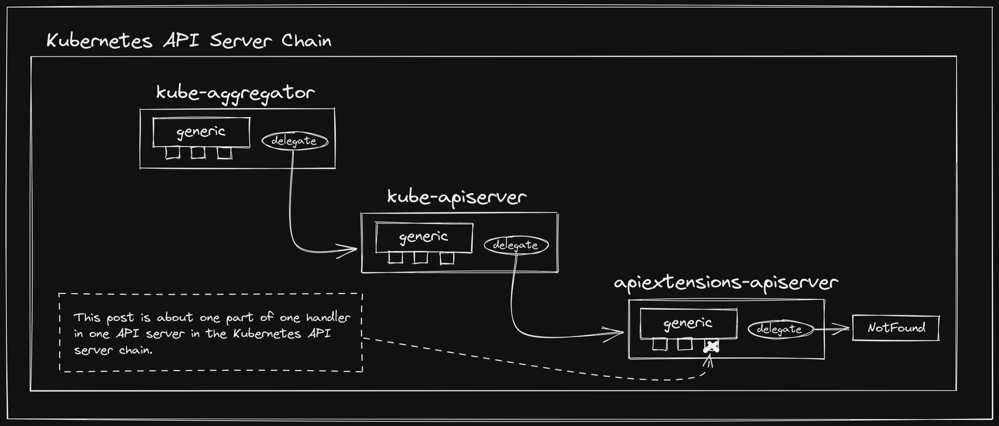
A Big Idea Link to heading
This all began because early Kubernetes creators / contributors noticed that
this system designed for scheduling containerized workloads could support other
use-cases, and naturally began to theorize about the feasibility of a plugin
model. Luckily, if you look hard enough, you can find all of these conversations
and how the design changed over time. This was long before Kubernetes
Enhancement Proposals (KEPs) were a thing, but when the
CustomResourceDefinition (CRD) KEP was retroactively
added, Brian Grant
aggregated some of those initial issues and design
docs,
as well as the first RFC for
ThirdPartyResources (the
predecessor to CustomResourceDefinitions).
So what is different about these resources than the rest of the “built-in” API
types? Well most importantly, Kubernetes doesn’t learn about their existence
until runtime. That means that the API
Server
must be informed of the name and structure of the new types, then dynamically
start serving endpoints that validate and store instances of those types.
CustomResourceDefinition
is the built-in Kubernetes API type that is used to communicate the definition
of these new types to the API Server. You can think of creating a CRD as
analogous to defining a new type in your favorite programming language.
Most folks familiar with Kubernetes use CRDs in some form or fashion, whether it be to provision infrastructure, manage certificates, or a whole host of other operations. At this point, they are a critical component of the Kubernetes ecosystem.
A Startling Realization Link to heading
I am typically someone who likes to know exactly how almost everything works. I don’t mean conceptually how it works; I want to know literally the exact operations that are performed in response to any event. Honestly, this is a bit of a problem. You don’t always have time to investigate the depths of what is happening behind every layer of abstraction (though that does sound like some sort of nirvana to me), and it is often the correct engineering decision to critically evaluate the reliability of a system, then accept the interface that it provides as your entry point.
Sometimes we can’t help ourselves though, and this week was one of those weeks for me. It was mostly triggered by a few issues we ran into with Crossplane. The first thing you should know is that we really like CRDs in Crossplane. So much so that we realized that we might like them even more that the API Server can handle. Some members of the Crossplane community (who also happen to be some of my wonderful coworkers at Upbound) have been working on auto-generating Providers for all major cloud providers, meaning that we suddenly have packages that install 700+ CRDs, and it turns out the API Server can get pretty upset about that. Those folks ran through some fairly extensive testing to evaluate what was going on here, which resulted in identifying that the bottleneck was due to the API Server recomputing the entire merged OpenAPI schema on every CRD install. Fortunately, there was already work in progress to make this process lazy, which has now been merged thanks to some great collaboration with upstream contributors and maintainers!
However, that wasn’t the primary thing that piqued my interest as I was not extensively involved with that investigation (I am hoping one of the folks who was will write up a detailed post about how they tested and identified the issue!). I was working on a separate effort that involves offline validation of custom resources, so I happened to be navigating the kube-openapi codebase as well. Through doing so, I came to a startling realization: I don’t know what is going on. Despite dedicating quite a bit of time to contributing to Kubernetes itself, and even more time working on Crossplane, which is tightly coupled to much of this machinery, if you asked me to describe exactly what goes on when you install a CRD and subsequently create custom resources of the type that it defines, I would have to get back to you on that.
Now, this alone is certainly not reason to write this blog post, which is
already getting fairly long before even getting through the background context.
A more compelling reason perhaps is that I also discovered that it appears that
very few other people know exactly what is going on here. And it’s for good
reason! While spelunking my way through the codebase, I discovered this
PR, which adds an OWNERS
file to the kube-openapi validation package, in which
@sttts accurately asserts:
“This code is sensitive because it is both reasonable complex and has influence on the API. Hence, we add an OWNERS file to restrict the set of people as reviewers+approvers who are deeply familiar with the validation logic.”
Well said. This logic is critical to ensuring that the Kubernetes API actually behaves as defined. I found myself needing to understand this, and I believe it is a net win for everyone if it more accessible to others as well. So here we go…
A Starting Point Link to heading
Before we get into the actual validation logic, we need to understand where it
is being called from. CustomResourceDefinitions are managed by the API
Extensions API
Server,
which gets bundled into the Kube API
Server
via chaining. This
server
is responsible for serving handlers for both CustomResourceDefinitions
themselves
and the new
types
they define.
Chaining of API servers is an incredibly interesting topic in its own right, which, out of respect for your time, I will not cover extensively in this post. However, I do promise to write a deep dive post on it in the future. In the mean time, I encourage you to take a look at the construction of a GenericAPIServer, and the apiserver project in general. The Kubernetes API server is actually a chain of the API Extensions API Server, the Kube API Server, and the Kube Aggregator API Server, all of which use the generic API server under the hood.
The create / update / delete operations of a CRD itself is of less interest to
us in this post, but to indulge the curious, the generic API server presents a
Storage
interface,
which is required for any resources that are added as RESTful services. Prior to
installing the CRD API
group,
we
instantiate
its implementation of the
interface,
then add it to the group’s VersionedResourcesStorageMap for the v1
version
(v1 is now the only supported as v1beta1 was removed in the recent 1.22
release).
When we then call InstallAPIGroup(), we eventually get to InstallREST() in
the generic API
server,
which constructs an
APIInstaller
that is used to
Install()
a new
webservice,
which uses the underlying Storage implementation to register resource
handlers.
So, yeah, some things are happening.
However, what we really want to see is how we are dealing with the custom
resources that we are defining the schema of using a CRD. Fortunately, the
generic API server also allows you to register arbitrary additional handlers in
the chain using
NonGoRestfulMux.
After we construct our
CustomResourceDefinitionHandler,
this is exactly what we
do.
This post is also not about the API Extensions API Server, though it feels wrong to not mention that besides registering REST handlers for CRDs and the custom resources they define, it also runs a few critical controllers that are responsible for operations such as reserving names and populating discovery caches.
Handling Requests Link to heading
The
CustomResourceDefinitionHandler
is really where all of the interesting logic around dealing with custom
resources resides. If you have ever worked with HTTP servers using Go, you are
likely familiar with the ServeHTTP method
signature, which allows a
type to act as a HandlerFunc. In
the CRD handler ServeHTTP
method,
we start off by parsing the
request
and evaluating whether it is a resource
request.
If it is not, we either pass it along to the
versionDiscoverHandler,
the
groupDiscoverHandler,
or, if it does not match paths for either one of those handlers, we pass it
along to the delegate API server.
Source:
apiextensions-apiserver/pkg/apiserver/customresource_handler.go#L242
if !requestInfo.IsResourceRequest {
pathParts := splitPath(requestInfo.Path)
// only match /apis/<group>/<version>
// only registered under /apis
if len(pathParts) == 3 {
if !r.hasSynced() {
responsewriters.ErrorNegotiated(serverStartingError(), Codecs, schema.GroupVersion{Group: requestInfo.APIGroup, Version: requestInfo.APIVersion}, w, req)
return
}
r.versionDiscoveryHandler.ServeHTTP(w, req)
return
}
// only match /apis/<group>
if len(pathParts) == 2 {
if !r.hasSynced() {
responsewriters.ErrorNegotiated(serverStartingError(), Codecs, schema.GroupVersion{Group: requestInfo.APIGroup, Version: requestInfo.APIVersion}, w, req)
return
}
r.groupDiscoveryHandler.ServeHTTP(w, req)
return
}
r.delegate.ServeHTTP(w, req)
return
}
You’ll see this pattern of passing along to the delegate across servers that use
the generic API server. This is what allows the server chaining we discussed
earlier, though with the API Extensions API Server being last in the chain, its
delegate is just the notFound
handler.
Next up, we need to get the CRD for the type of custom resource we are handling.
This accomplished by passing the name to the
crdLister,
which is backed by the
CustomResourceDefinitionInformer.
We constructed this informer in the API Extensions API Server instantiation and
passed
it
to the CRD handler. An interesting point to note here is that most folks are
familiar with
SharedInformers
from building some sort of client that interacts with Kubernetes (e.g. an
external controller or CLI tool). However, in this case we are the server, so
the
clientset
we use is backed by a
LoopbackClientConfig
provided by the generic API server.
Next, we perform a variety of checks to ensure that the request is valid:
Source:
apiextensions-apiserver/pkg/apiserver/customresource_handler.go#L275
// if the scope in the CRD and the scope in request differ (with exception of the verbs in possiblyAcrossAllNamespacesVerbs
// for namespaced resources), pass request to the delegate, which is supposed to lead to a 404.
namespacedCRD, namespacedReq := crd.Spec.Scope == apiextensionsv1.NamespaceScoped, len(requestInfo.Namespace) > 0
if !namespacedCRD && namespacedReq {
r.delegate.ServeHTTP(w, req)
return
}
if namespacedCRD && !namespacedReq && !possiblyAcrossAllNamespacesVerbs.Has(requestInfo.Verb) {
r.delegate.ServeHTTP(w, req)
return
}
if !apiextensionshelpers.HasServedCRDVersion(crd, requestInfo.APIVersion) {
r.delegate.ServeHTTP(w, req)
return
}
// There is a small chance that a CRD is being served because NamesAccepted condition is true,
// but it becomes "unserved" because another names update leads to a conflict
// and EstablishingController wasn't fast enough to put the CRD into the Established condition.
// We accept this as the problem is small and self-healing.
if !apiextensionshelpers.IsCRDConditionTrue(crd, apiextensionsv1.NamesAccepted) &&
!apiextensionshelpers.IsCRDConditionTrue(crd, apiextensionsv1.Established) {
r.delegate.ServeHTTP(w, req)
return
}
Assuming the request is valid, we now have to fetch the serving information for the CRD that defines the custom resource type. This method accesses the handler’s CRD storage map, which holds a cache of serving information for each CRD.
The
customStoragemap is implemented as anatomic.Value, which has performance advantages over a traditionalRWMutexapproach in read-heavy situations.
In the event that the CRD storage is present in the map, it is returned and we
proceed. However, if it is not, we have to first acquire a write lock on the
map,
then construct all of the necessary information for the given CRD. There is a
lot that is going on here, but I want to particularly focus in on constructing
the validator for each
version:
Source:
apiextensions-apiserver/pkg/apiserver/customresource_handler.go#L733
var internalValidationSchema *apiextensionsinternal.CustomResourceValidation
if validationSchema != nil {
internalValidationSchema = &apiextensionsinternal.CustomResourceValidation{}
if err := apiextensionsv1.Convert_v1_CustomResourceValidation_To_apiextensions_CustomResourceValidation(validationSchema, internalValidationSchema, nil); err != nil {
return nil, fmt.Errorf("failed to convert CRD validation to internal version: %v", err)
}
}
validator, _, err := apiservervalidation.NewSchemaValidator(internalValidationSchema)
if err != nil {
return nil, err
}
This validator is what will be used to ensure that all custom resources that
are created conform to the openAPIV3Schema defined in the CRD. It is passed
to
NewStrategy(),
which is then passed to
NewStorage(),
which then constructs an implementation of the Storage interface provided by
the generic API server, similarly to what we saw with installing the
CustomResourceDefinition API group earlier. There are a number of levels of
indirection here before the actual calling of the validator, but let’s finish
out the handler before we get to that.
Now that we have the serving information for the CRD, we can evaluate what type of request is being made:
Source:
apiextensions-apiserver/pkg/apiserver/customresource_handler.go#L349
switch {
case subresource == "status" && subresources != nil && subresources.Status != nil:
handlerFunc = r.serveStatus(w, req, requestInfo, crdInfo, terminating, supportedTypes)
case subresource == "scale" && subresources != nil && subresources.Scale != nil:
handlerFunc = r.serveScale(w, req, requestInfo, crdInfo, terminating, supportedTypes)
case len(subresource) == 0:
handlerFunc = r.serveResource(w, req, requestInfo, crdInfo, crd, terminating, supportedTypes)
default:
responsewriters.ErrorNegotiated(
apierrors.NewNotFound(schema.GroupResource{Group: requestInfo.APIGroup, Resource: requestInfo.Resource}, requestInfo.Name),
Codecs, schema.GroupVersion{Group: requestInfo.APIGroup, Version: requestInfo.APIVersion}, w, req,
)
}
We are primarily interested in the main resource as opposed to any subresources.
In the serveResource
method,
we use the crdInfo to acquire the storage for the relevant CRD version, then
match to a
handler
based on the request verb:
Source:
apiextensions-apiserver/pkg/apiserver/customresource_handler.go#L375
switch requestInfo.Verb {
case "get":
return handlers.GetResource(storage, requestScope)
case "list":
forceWatch := false
return handlers.ListResource(storage, storage, requestScope, forceWatch, r.minRequestTimeout)
case "watch":
forceWatch := true
return handlers.ListResource(storage, storage, requestScope, forceWatch, r.minRequestTimeout)
case "create":
// we want to track recently created CRDs so that in HA environments we don't have server A allow a create and server B
// not have observed the established, so a followup get,update,delete results in a 404. We've observed about 800ms
// delay in some CI environments. Two seconds looks long enough and reasonably short for hot retriers.
justCreated := time.Since(apiextensionshelpers.FindCRDCondition(crd, apiextensionsv1.Established).LastTransitionTime.Time) < 2*time.Second
if justCreated {
time.Sleep(2 * time.Second)
}
if terminating {
err := apierrors.NewMethodNotSupported(schema.GroupResource{Group: requestInfo.APIGroup, Resource: requestInfo.Resource}, requestInfo.Verb)
err.ErrStatus.Message = fmt.Sprintf("%v not allowed while custom resource definition is terminating", requestInfo.Verb)
responsewriters.ErrorNegotiated(err, Codecs, schema.GroupVersion{Group: requestInfo.APIGroup, Version: requestInfo.APIVersion}, w, req)
return nil
}
return handlers.CreateResource(storage, requestScope, r.admission)
case "update":
return handlers.UpdateResource(storage, requestScope, r.admission)
case "patch":
return handlers.PatchResource(storage, requestScope, r.admission, supportedTypes)
case "delete":
allowsOptions := true
return handlers.DeleteResource(storage, allowsOptions, requestScope, r.admission)
case "deletecollection":
checkBody := true
return handlers.DeleteCollection(storage, checkBody, requestScope, r.admission)
default:
responsewriters.ErrorNegotiated(
apierrors.NewMethodNotSupported(schema.GroupResource{Group: requestInfo.APIGroup, Resource: requestInfo.Resource}, requestInfo.Verb),
Codecs, schema.GroupVersion{Group: requestInfo.APIGroup, Version: requestInfo.APIVersion}, w, req,
)
return nil
}
Upon matching to the correct verb, we invoke the generic verb handler, which is
provided by the generic API server, with the CRD version’s storage
implementation, along with other relevant information, such as admission
criteria. The CreateResource()
handler
performs some generic option validation and conversion, before eventually
invoking
r.Create(),
which is a method on the wrapped storage we passed to the handler.
Source:
apiserver/pkg/endpoints/handlers/create.go#L153
requestFunc := func() (runtime.Object, error) {
return r.Create(
ctx,
name,
obj,
rest.AdmissionToValidateObjectFunc(admit, admissionAttributes, scope),
options,
)
}
// Dedup owner references before updating managed fields
dedupOwnerReferencesAndAddWarning(obj, req.Context(), false)
result, err := finisher.FinishRequest(ctx, func() (runtime.Object, error) {
if scope.FieldManager != nil {
liveObj, err := scope.Creater.New(scope.Kind)
if err != nil {
return nil, fmt.Errorf("failed to create new object (Create for %v): %v", scope.Kind, err)
}
obj = scope.FieldManager.UpdateNoErrors(liveObj, obj, managerOrUserAgent(options.FieldManager, req.UserAgent()))
admit = fieldmanager.NewManagedFieldsValidatingAdmissionController(admit)
}
if mutatingAdmission, ok := admit.(admission.MutationInterface); ok && mutatingAdmission.Handles(admission.Create) {
if err := mutatingAdmission.Admit(ctx, admissionAttributes, scope); err != nil {
return nil, err
}
}
// Dedup owner references again after mutating admission happens
dedupOwnerReferencesAndAddWarning(obj, req.Context(), true)
result, err := requestFunc()
// If the object wasn't committed to storage because it's serialized size was too large,
// it is safe to remove managedFields (which can be large) and try again.
if isTooLargeError(err) {
if accessor, accessorErr := meta.Accessor(obj); accessorErr == nil {
accessor.SetManagedFields(nil)
result, err = requestFunc()
}
}
return result, err
})
So where does our validation against the CRD schema happen? If we go back to
when we called NewStrategy(), you’ll see that the customResourceStrategy we
create
has a Validate()
method,
which calls the underlying validator we passed.
Source:
apiextensions-apiserver/pkg/registry/customresource/strategy.go#L148
// Validate validates a new CustomResource.
func (a customResourceStrategy) Validate(ctx context.Context, obj runtime.Object) field.ErrorList {
var errs field.ErrorList
errs = append(errs, a.validator.Validate(ctx, obj, a.scale)...)
// validate embedded resources
if u, ok := obj.(*unstructured.Unstructured); ok {
v := obj.GetObjectKind().GroupVersionKind().Version
errs = append(errs, schemaobjectmeta.Validate(nil, u.Object, a.structuralSchemas[v], false)...)
// validate x-kubernetes-list-type "map" and "set" invariant
errs = append(errs, structurallisttype.ValidateListSetsAndMaps(nil, a.structuralSchemas[v], u.Object)...)
}
return errs
}
This customResourceStrategy is passed to NewStorage(), where we can see that
a REST instance is
constructed,
which wraps the strategy in a
genericregistry.Store
from the generic API server.
Source:
apiextensions-apiserver/pkg/registry/customresource/etcd.go#L83
store := &genericregistry.Store{
NewFunc: func() runtime.Object {
// set the expected group/version/kind in the new object as a signal to the versioning decoder
ret := &unstructured.Unstructured{}
ret.SetGroupVersionKind(kind)
return ret
},
NewListFunc: func() runtime.Object {
// lists are never stored, only manufactured, so stomp in the right kind
ret := &unstructured.UnstructuredList{}
ret.SetGroupVersionKind(listKind)
return ret
},
PredicateFunc: strategy.MatchCustomResourceDefinitionStorage,
DefaultQualifiedResource: resource,
CreateStrategy: strategy,
UpdateStrategy: strategy,
DeleteStrategy: strategy,
ResetFieldsStrategy: strategy,
TableConvertor: tableConvertor,
}
The generic store is what implements the r.Create()
method,
and it calls the rest.BeforeCreate()
method
with the CreateStrategy that is set to our customResourceStrategy in the
code snippet above. The docstring on
BeforeCreate()
confirms that this is where we call the strategy’s Validate():
BeforeCreate ensures that common operations for all resources are performed on creation. It only returns errors that can be converted to api.Status. It invokes PrepareForCreate, then GenerateName, then Validate. It returns nil if the object should be created.
If we look in the function body, we’ll find that it does in fact call our
strategy’s Validate()
method:
Source:
apiserver/pkg/registry/rest/create.go#L128
if errs := strategy.Validate(ctx, obj); len(errs) > 0 {
return errors.NewInvalid(kind.GroupKind(), objectMeta.GetName(), errs)
}
Performing Validation Link to heading
Well, it’s been a wild ride, what do you say we actually move to the main topic
of this post? Once we get to the point where we call Validate(), what happens?
To understand, we’ll need to go back to where we constructed the
validator
with apiservervalidation.NewSchemaValidator() for each version of the CRD we
were adding to the CustomResourceDefinitionHandler CRD storage map. This
function takes the internal CustomResourceValidation and converts it into an
OpenAPI
schema
then constructs a
validate.SchemaValidator:
Source:
apiextensions-apiserver/pkg/apiserver/validation/validation.go#L42
// NewSchemaValidator creates an openapi schema validator for the given CRD validation.
func NewSchemaValidator(customResourceValidation *apiextensions.CustomResourceValidation) (*validate.SchemaValidator, *spec.Schema, error) {
// Convert CRD schema to openapi schema
openapiSchema := &spec.Schema{}
if customResourceValidation != nil {
// TODO: replace with NewStructural(...).ToGoOpenAPI
if err := ConvertJSONSchemaPropsWithPostProcess(customResourceValidation.OpenAPIV3Schema, openapiSchema, StripUnsupportedFormatsPostProcess); err != nil {
return nil, nil, err
}
}
return validate.NewSchemaValidator(openapiSchema, nil, "", strfmt.Default), openapiSchema, nil
}
The schema and validator are both being consumed from the validate
package
in kube-openapi (remember when we
were talking about that ages ago!?). This codebase is interesting as a large
portion of it was forked
from go-openapi repositories to avoid breaking
changes and improve
velocity of bugfixes
that could impact how the Kubernetes API is interpreted. Most of the code we are
looking at in the validate package is originally from
go-openapi/validate.
Resource validation against a schema is performed recursively using a set of
validators. The top-level validator, the one we instantiate in the API
Extensions API Server for each CRD version, is a
SchemaValidator.
A SchemaValidator instance itself contains:
typeValidatorschemaPropsValidatorstringValidatorformatValidatornumberValidatorsliceValidatorcommonValidatorobjectValidator
Source:
kube-openapi/pkg/validation/validate/schema.go#L58
func NewSchemaValidator(schema *spec.Schema, rootSchema interface{}, root string, formats strfmt.Registry, options ...Option) *SchemaValidator {
if schema == nil {
return nil
}
if rootSchema == nil {
rootSchema = schema
}
if ref := schema.Ref.String(); ref != "" {
panic(fmt.Sprintf("schema references not supported: %s", ref))
}
s := SchemaValidator{
Path: root,
in: "body",
Schema: schema,
Root: rootSchema,
KnownFormats: formats,
Options: SchemaValidatorOptions{}}
for _, o := range options {
o(&s.Options)
}
s.validators = []valueValidator{
s.typeValidator(),
s.schemaPropsValidator(),
s.stringValidator(),
s.formatValidator(),
s.numberValidator(),
s.sliceValidator(),
s.commonValidator(),
s.objectValidator(),
}
return &s
}
Each of these validators implements the validator
interface
(including SchemaValidator):
Source:
kube-openapi/pkg/validation/validate/validator.go#L25
type valueValidator interface {
// SetPath sets the exact path of the validator prior to calling Validate.
// The exact path contains the map keys and array indices to locate the
// value to be validated from the root data element.
SetPath(path string)
// Applies returns true if the validator applies to the valueKind
// from source. Validate will be called if and only if Applies returns true.
Applies(source interface{}, valueKind reflect.Kind) bool
// Validate validates the value.
Validate(value interface{}) *Result
}
Without even looking at the algorithm implementation, you can likely guess what
we are going to be doing here: check if a validator applies to a given value
and, if it does, run its validation. This is not wildly complex, but it can
start to get more confusing once we realize that some of these underlying
validators themselves create new SchemaValidators, namely
schemaPropsValidator,
sliceValidator,
and
objectValidator.
The easiest way to understand how this works is to step through an example. I’ve
put together a small validator
that you can clone to walk through the following steps. All we are doing here is
reading in some CRDs, creating schema validators for them, then running a custom
resource through the appropriate validator for its GroupVersionKind. The
custom resource we are using (cr.yaml) is a Crossplane
Composition
that has two invalid fields:
spec.resources[0].patches.transforms.typeis a required value and we have commented it out (schema / field)spec.resources[0].connectionDetails[1].fromConnectionSecretKeymust be a string and we have provided an integer (schema / field)
If we execute go run main.go, we see that these two violations are reported.
$ go run main.go
Validation Error 0 (apiextensions.crossplane.io/v1, Kind=Composition)(xpostgresqlinstances.gcp.database.example.org): spec.resources.patches.transforms.type in body is required
Validation Error 1 (apiextensions.crossplane.io/v1, Kind=Composition)(xpostgresqlinstances.gcp.database.example.org): spec.resources.connectionDetails.fromConnectionSecretKey in body must be of type string: "number"
You might notice a small bug here, more on this in a bit.
It works! This is a fairly complex resource in terms of nested schema, which
makes it a great example to evaluate. Let’s start by setting some breakpoints in
the SchemaValidator.Validate()
method:
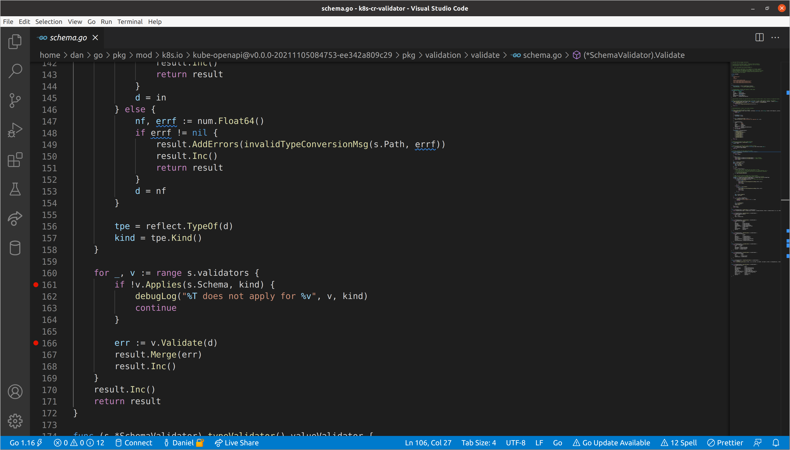
This will stop us on every call to the underlying validators’ Applies() and
Validate() methods, which we can step into to get a deeper understanding of
what is going on. One thing we have skipped over is the reflection performed
earlier in the validation
body
to ascertain the underlying Go type of the data that is passed as an empty
interface. Most Applies()
implementations are going to make a decision on whether validation should be run
based on both the source type from the schema, and the Go type of the data.
When we start our debug session, we’ll break on the first call to v.Applies()
in the top-level SchemaValidator. There are a few interesting things to take
in already:
s.Pathof our schema validator is set to"", which is expected since we are at the top level.- Our
kindis a struct, which we learned via reflection and aligns with the knowledge that we passed*unstructured.Unstructured. However, ourdataanddare not the same type.dhas been converted to amap[string]interface{}via the call toswag.ToDynamicJSON()earlier in the function body. v, the current validator, is atypeValidator, which aligns with the fact that it was the first that was added to the slice in the call toNewSchemaValidator().
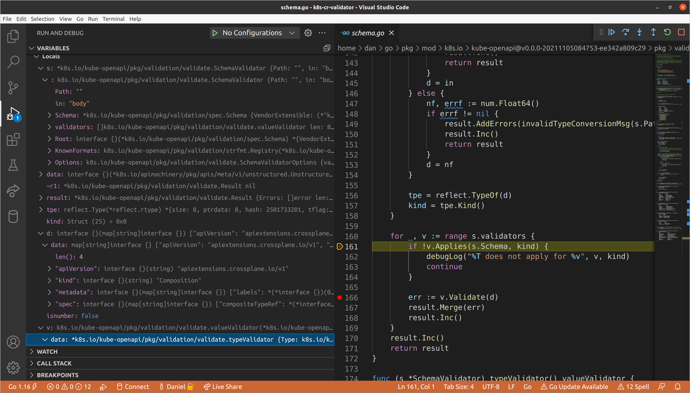
Let’s step into this call. Here the typeValidator is specifying that it only
applies to schema types when Type or Format are specified. Though Type is
technically not required in the OpenAPI
schema, it is
required in Kubernetes CRDs, and we are always passing a spec.Schema, so type
validation always applies.
This is also an example of where
kube-openapidiffers fromgo-openapi/validate. There is no concept ofParametersorHeadersin Kubernetes CRD schemas, so those type checks were stripped fromkube-openapi, but still exist ingo-openapi/validate.
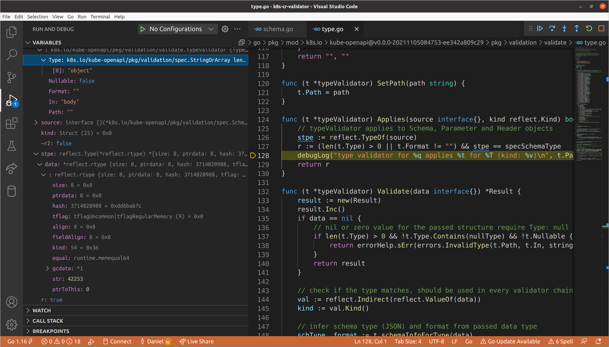
We won’t go into extensive detail on the validation logic for the
typeValidator (though feel free to walk through it yourself) because we are
primarily interested in how we get into validating nested schemas, and the
typeValidator will never trigger recursive validation. Let’s continue until we
get to the objectValidator. This validator does take into account the kind of
data passed, only reporting that it applies when the type is a struct or map.
Our top-level data is in fact a struct, so we will run object validation.
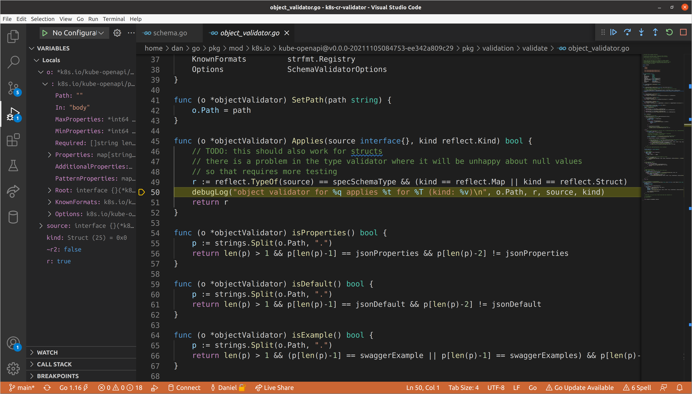
Once we reach validation, we run a few check on the number of properties, but
eventually get to the point where we are iterating through each of the
properties defined for the object, at which point we extract the path name and
schema for the property, then call NewSchemaValidator() with those values.
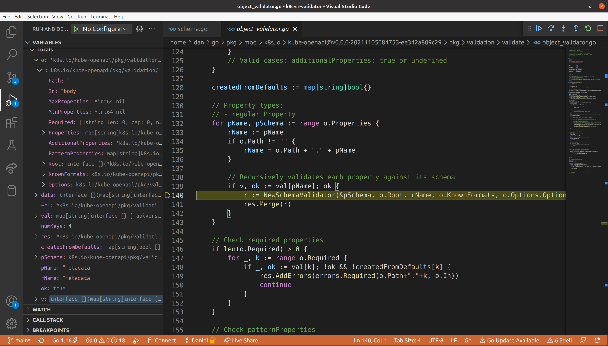
Knowing that we don’t have any validation errors in our metadata block, let’s
continue until we reach spec. We’ll set a breakpoint on the call to
NewSchemaValidator() so that we make sure to break there after the previous
schema validators return. When we get there, our path will be updated to spec
and the data we pass for validation is a map of the fields nested beneath the
spec. Now we’ll step into the new schema validator.
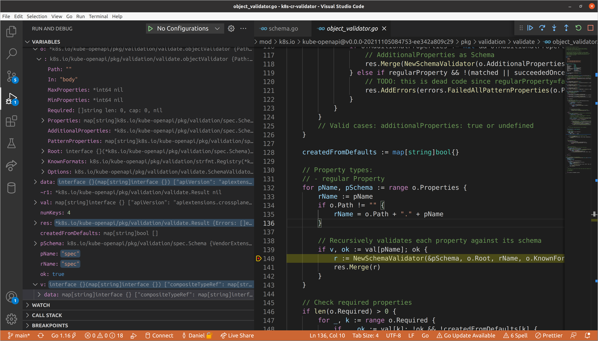
When we hit the validation loop inside the nested schema validator, we can see
the updated path, as well as the nested data, which is now being passed to each
of the child validators. We have three nested fields within this spec, each of
a different type:
compositeTypeRef->map[string]interface{}resources->[]interface{}writeConnectionSecretsToNamespace->string
As you may have guessed, when we get to iterating through the properties in the
child object validator of the spec schema validator, we will once again create
new nested schema validators for each (and in turn for each of their properties,
and so on). We can view recursion depth by taking a look at our call stack.
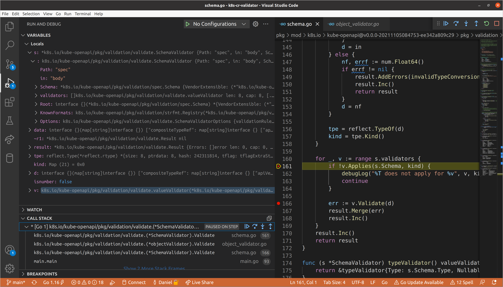
Once again, we’ll continue until we get to resources, as we know that is where
our validation errors exist. This will be the first schema validator for which
the slice validator applies, meaning that we will need to create a new schema
validator for each item in the set of resources. Each item adheres to the same
schema, so we create one schema validator, then repeatedly update the path with
the index of the item in the slice and call Validate() on its data.
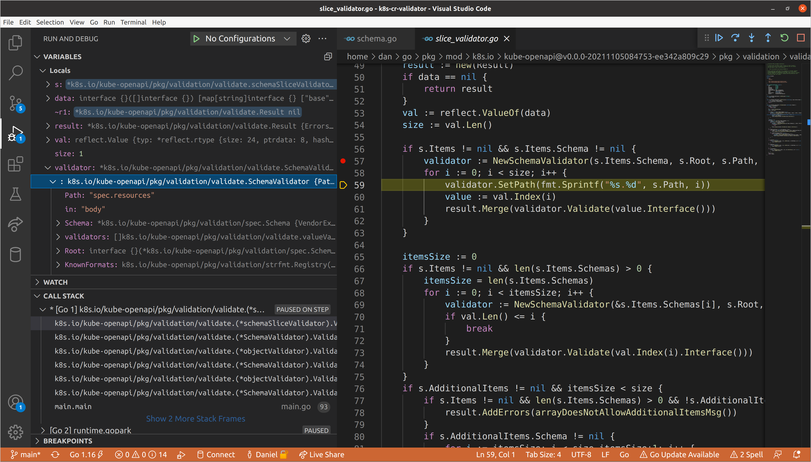
A Brief Aside
Though it makes sense to construct a single validator then set the path for each
item, I noticed a bug in this implementation while investigating why I wasn’t
seeing the index in the path returned from validation errors (you may have
noticed this when we ran the simple validation example earlier). The reason for
this is that calling SetPath() on the schema validator after it has been
constructed does not update the path in each of its child validators, which had
their paths set when they were constructed. I wrote up an
issue describing this
behavior in detail, and though not the most elegant solution, this can be
mitigated by updating the schema validator’s SetPath() implementation to also
call SetPath() on each of its child validators.
--- a/pkg/validation/validate/schema.go
+++ b/pkg/validation/validate/schema.go
@@ -99,6 +99,9 @@ func NewSchemaValidator(schema *spec.Schema, rootSchema interface{}, root string
// SetPath sets the path for this schema validator
func (s *SchemaValidator) SetPath(path string) {
s.Path = path
+ for _, v := range s.validators {
+ v.SetPath(path)
+ }
}
You can observe this bug in the API server today by installing a CRD and then
creating an invalid custom resource with kubectl create -f cr.yaml --validate=false, which disables client-side validation.
$ kubectl create -f cr.yaml --validate=false
The Composition "xpostgresqlinstances.gcp.database.example.org" is invalid:
* spec.resources.connectionDetails.fromConnectionSecretKey: Invalid value: "integer": spec.resources.connectionDetails.fromConnectionSecretKey in body must be of type string: "integer"
* spec.resources.patches.transforms.type: Required value
Anyway, back to your regularly scheduled programming…
Both of our validation errors occur in slices nested within this item in the
resources slice. We can speed up how long it takes to get to them by
temporarily disabling all breakpoints except for the one in the slice validator
(it will have to be called to create our nested schema validators). I personally
happened to hit connectionDetails first, but mileage will vary given that
these fields are keys in a map, which has unspecified ordering in
Go. Here you’ll see the
aforementioned bug, as the parent schema validator path contains the index, but
the child does not, meaning that all subsequent children also will not.
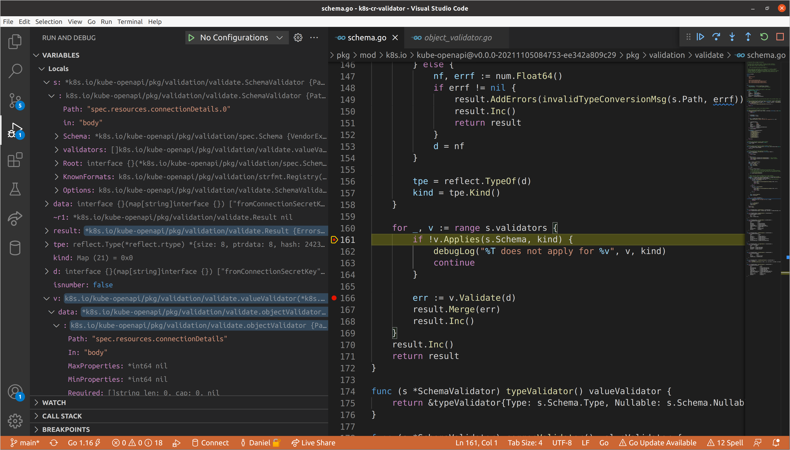
Eventually we’ll reach the type validator for
spec.resources[0].connectionDetails[1].fromConnectionSecretKey, which as we
saw before, is responsible for ensuring that values are of the correct type. In
this case our value is a float64 when a string was required, so we return an
InvalidType error, which gets added to list of validation errors that
eventually is returned all the way up to our top-level schema validator.
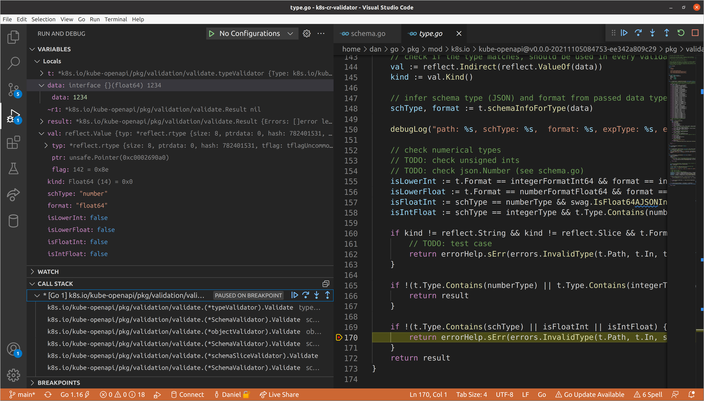
Those errors are then passed back to the create handler we saw in the generic
API server and, just like that… we’ve discovered how Kubernetes validates your
custom resources!
Concluding Thoughts Link to heading
We covered a lot in this post, and, to be abundantly clear, it is certainly not a requirement to know what is going on behind the scenes in every area of Kubernetes to be a high-level user, or even high-level contributor for that matter! However, as important projects and ecosystems grow larger and larger, I think it is vitally important to have some folks in each area that care about understanding the system at an intimate level, and communicating it to others.
I hope that this post (and all the others I write) can help serve that purpose. If I can do a better job of reaching that goal, or you have any questions or comments, please feel free to send me a message @hasheddan on Twitter!